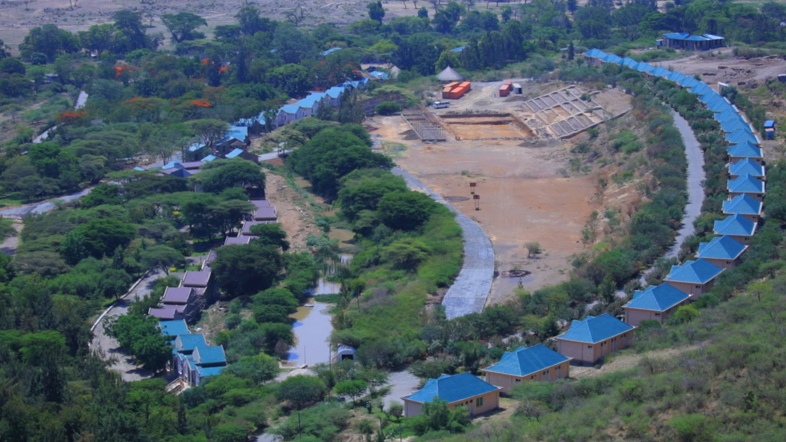

Sodare Resort
Sodere Resort is beuitiful resort in Hawash Malkasa town in Ethiopia that has hot springs. It is one of the weekend get away places that people from the capital city Addis Ababa frequently go to. It has a natural hot spring. The resort campus has two swimming pools filled with warm water. The large one is open at weeekends, the medium sized one mid week. This is to enable them to be refilled weekly with the beautiful thermally heated water. The large pool has no shallow end, but does have a small non-swimmers area at the side. I have worked in Sodare Resort on an accountant position for like 8 months starting from Augest 2012 to march 2013.
